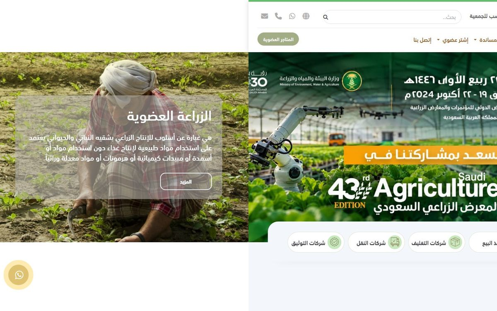

حرج الصفحة أعرض من الشاشة بمرتين
على الكمبيوتر يبلغ عرض الصفحة 2880 بكسل والشاشة 1440، وعلى الجوال 780 مقابل 390. أي سحبة جانبية تكشف نصف صفحة فارغا، أو تظهر الشريحة التالية بجوار الأولى، فيبدو الموقع مكسورا أثناء التصفح. ويسجل مقياس ثبات التخطيط على الكمبيوتر 0.995، والحد المقبول عند Google هو 0.1.
